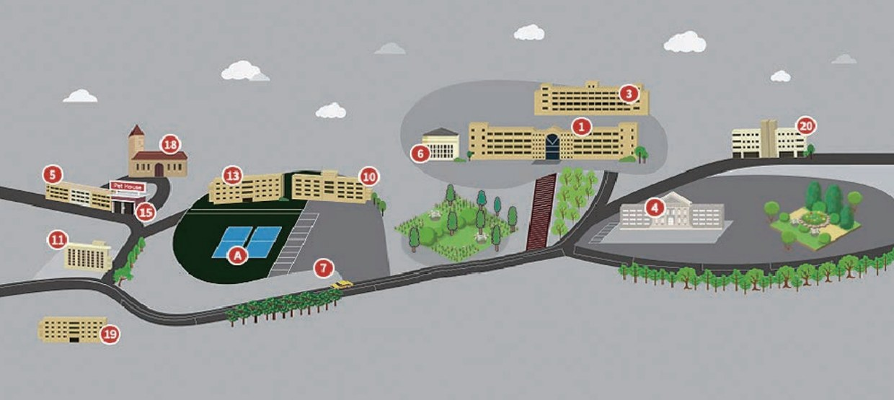

Video khuôn viên Donga University of Health · Lối vào cổng chính → Tòa nhà chính (emart24) → Bảng chỉ dẫn tổng hợp khu thực hành
Giới thiệu Trung tâm Giao lưu Quốc tế
Đồng hành cùng du học sinh nước ngoài trong việc học tiếng Hàn và cuộc sống tại Hàn Quốc.
Trung tâm Giao lưu Quốc tế Donga University of Health, dành cho du học sinh nước ngoài muốn học tiếng Hàn, lấy việc vận hành khóa học tiếng Hàn làm trọng tâm, hỗ trợ toàn diện đời sống du học từ tuyển sinh·đăng ký đến cư trú (visa)·bảo hiểm·ký túc xá·thích nghi với cuộc sống. Sinh viên đến từ Việt Nam và nhiều quốc gia khác học tiếng Hàn cùng văn hóa Hàn Quốc trong khuôn viên trường và chuẩn bị cho bước tiếp theo.
Khóa học trọng tâm
Khóa học tiếng Hàn (chính quy·ngắn hạn)
Đối tượng
Du học sinh nước ngoài
Phạm vi hỗ trợ
Tuyển sinh·Cư trú·Đời sống
Ngôn ngữ hướng dẫn
Tiếng Hàn·Tiếng Việt
Sơ đồ tổ chức
Các cán bộ phụ trách theo từng lĩnh vực hỗ trợ tuyển sinh·đào tạo·đời sống·hành chính.
Giám đốc
Kim Bo-geon
Giám đốc Trung tâm Giao lưu Quốc tế
Phụ trách
Lee Seo-yeon
Phụ trách tuyển sinh
Phụ trách
Park Ji-ho
Phụ trách khóa học tiếng Hàn
Phụ trách
Choi Yu-jin
Phụ trách đời sống du học·visa
Phụ trách
Jeong Min-su
Phụ trách hành chính
Đường đến trường
Hướng dẫn cách đến Trung tâm Giao lưu Quốc tế Donga University of Health.


Địa chỉ
전라남도 영암군 학산면 영산로 76-57 (우 58439) Trung tâm Giao lưu Quốc tế Donga University of Health
Giao thông công cộng
Bạn có thể di chuyển bằng ô tô từ ga KTX 나주역·광주송정역 và các ga khác. Nên kiểm tra tuyến xe buýt nội thành·nội huyện và thời gian di chuyển trước khi đến.
Đỗ xe
Có thể sử dụng bãi đỗ xe dành cho khách trong trường, khi đến vui lòng hỏi tại phòng bảo vệ cổng chính
Liên hệ
Điện thoại 061-470-1700 (số chính) / Trang web www.duh.ac.kr
Sơ đồ khuôn viên
Hướng dẫn bố trí và số hiệu các tòa nhà trong khuôn viên.

| Số tòa nhà | Phân loại | Mô tả |
|---|---|---|
| 1 | 본관동 | Các phòng ban hành chính đại học, phòng nghiên cứu giảng viên, phòng hỗ trợ hành chính, phòng hành chính chuyên ngành công tác xã hội, phòng học lý thuyết·đại cương |
| 3 | 3호관 | Phòng thực hành khoa Điều dưỡng |
| 4 | 왕인관 | Thư viện, phòng y tế, phòng hành chính và phòng nghiên cứu giảng viên khoa Điều dưỡng, phòng học chuyên ngành·thực hành khoa Giáo dục Mầm non |
| 5 | 낭주관 | Nhà ăn ký túc xá, ký túc xá nữ sinh |
| 6 | 봉석관 | Nhà ăn sinh viên, pháp nhân, văn phòng các cán bộ chủ chốt của trường |
| 7 | 경비실 | Phòng bảo vệ |
| 10 | 정무관 | Phòng rèn luyện thể lực, tủ nhận hàng tự động, cửa hàng tiện lợi |
| 13 | 월출관 | Trung tâm hợp tác doanh nghiệp - nhà trường, cơ sở giáo dục nghiên cứu và phúc lợi |
| 15 | 기숙사열람실 | Phòng đọc ký túc xá |
| 18 | 요한관 | Hội trường dùng cho lễ nhập học·lễ tốt nghiệp và các sự kiện |
| 19 | 낭주신관 | Ký túc xá nam sinh |
| 20 | SN동 | Phòng học lý thuyết khoa Điều dưỡng, phòng học đại cương |
| A | Sân vận động | Sân vận động của trường |
| B | Khu thực hành capstone Leisure Landscape | Khu thực hành capstone chuyên ngành Leisure Landscape |
| C | Khu thực hành Leisure Landscape | Khu thực hành chuyên ngành Leisure Landscape |
Hướng dẫn xe buýt đưa đón
Vận hành 2 tuyến xe buýt đưa đón miễn phí về hướng Mokpo. (2 xe/ngày · mỗi lượt đi·về 1 chuyến, có thể thay đổi tùy theo tình hình sử dụng)
| Mokpo xe ① | Vị trí dừng |
|---|---|
| 07:40 | 목포역 소화물 취급소 |
| 07:42 | 목포역 (권농사 농약사) |
| 07:44 | 1호광장 (가구백화점 앞) |
| 07:45 | (구)연동육교 (민 안경점) |
| 07:46 | 2호광장 (스쿨룩스교복 앞) |
| 07:48 | 3호광장 (목포우체국 주차장입구) |
| 07:50 | MBC 방송국 앞 |
| 07:51 | 알파문구 건너편 (버스승강장) |
| 07:57 | 담양숯불갈비 ((구)외환은행·Y마트 건너) |
| 07:58 | 부영아파트입구 (하당정형외과 건너편) |
| 07:59 | 한사랑동물병원 건너편 (맥도날드·유니클로 앞) |
| 08:00 | 항만청 (500번 정류장) |
| 08:10 | (구) 삼호터미널 |
| Đến nơi | Trường học |
| Mokpo xe ② | Vị trí dừng |
|---|---|
| 07:45 | 목포터미널 건너 (시내버스 승강장 위) |
| 07:47 | E마트 건너 (삼성디지털프라자 앞) |
| 07:52 | 남악대로 법원 건너편 (LG전자 앞) |
| 07:55~56 | 도청 건너 도청프라자 (시내버스 승강장 위) |
| 07:57 | 아웃백 목포 남악점 앞 |
| 08:03 | 옥암 골드클래스 104동 앞 대로변 버스정류장 |
| Đến nơi | Trường học |
Xe buýt chiều về của tất cả các tuyến xuất phát từ sân vận động trường lúc 17:30. Thời gian vận hành·vị trí dừng có thể thay đổi theo lịch học vụ, vui lòng xác nhận với Trung tâm Giao lưu Quốc tế (061-470-1700).